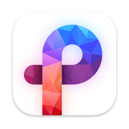

Browser

Arc Browser
A modern web browser with a unique user interface.
Alternatives:
- Safari (Built-in to macOS)
- Google Chrome
- Mozilla Firefox
- Brave Browser
- Orion Browser


Archive Utility

The Unarchiver
A versatile file archive extraction tool.
Alternatives:
- Keka
- StuffIt Expander
- BetterZip
- Archive Utility (Built-in to macOS)
- Commander One

Media Player
VLC Media Player
A free and open-source cross-platform multimedia player.
Alternatives:
- IINA
- QuickTime Player (Built-in to macOS)
- MPV
- 5KPlayer
- Elmedia Player
Menu Bar Utility
ItsyCal
A tiny menu bar calendar.
Alternatives:
- Menu Calendar Clock
- Day One
- Fantastical
- Calendar 366 II
- Date & Time Preferences (Built-in to macOS)
Notes / Workspace

Notion (Free Plan)
An all-in-one workspace for notes, tasks, wikis, and databases.
Alternatives:
File Manager
Commander One
Dual-pane file manager with built-in archive handling & remote connections (Free/Pro).
Alternatives:
- Finder (Built-in to macOS)
- Path Finder
- ForkLift
- Transmit
- Double Commander
Photo Previewer

Pixea
Lightweight and fast image viewer from the App Store.
Alternatives:
- Preview (Built-in to macOS)
- XnView MP
- qView
- ApolloOne
- Photomator
Screenshot Tool
Shottr
Fast, free screenshot tool with annotation, scrolling capture, and OCR.
Alternatives:
- Screenshot Utility (Built-in)
- CleanShot X
- Snagit
- Skitch
- Monosnap
Code Editor / IDE

Visual Studio Code
A popular, free, and highly extensible code editor.
Alternatives:
Torrent Client

Transmission
Simple, free, open-source BitTorrent client known for its native Mac feel.